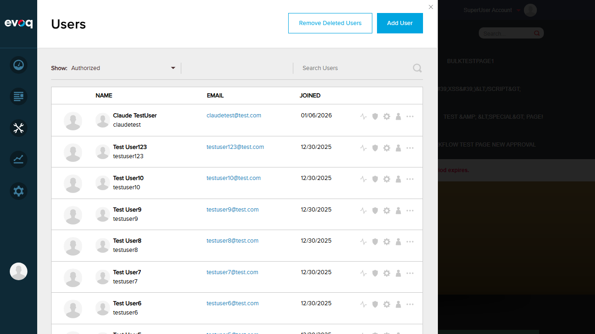

Main analytics dashboard showing overall community metrics including user engagement, content creation, and activity trends
UI Location:
PersonaBar > Dashboard > Community Analytics
Feature Priority:
Top
Test Date:
January 6, 2026
CRITICAL BUG DISCOVERED
The Community Analytics dashboard fails to load completely due to a JavaScript error.
Error:
TypeError: utility.serializeCustomDate is not a function
at dashboardClass.init (social-dashboard-combined-instance.js:1025:39)
Impact: All test scenarios for this feature cannot be executed via UI because the dashboard panel renders blank/empty. The error occurs immediately when attempting to access Community Analytics from PersonaBar > Dashboard.
Root Cause: The file social-dashboard-combined-instance.js at line 1025 calls utility.serializeCustomDate(), but this function does not exist on the utility object. This appears to be a missing dependency or version mismatch with the PersonaBar.UI framework.
Comparison: Site Analytics (also under Dashboard) loads correctly, confirming the issue is specific to Community Analytics.
Test Summary
Test Scenario
Status
Notes
Access Community Analytics Dashboard
FAIL
JavaScript error prevents dashboard from loading
View dashboard with different time periods (daily, weekly, monthly, yearly)
FAIL
Cannot test - dashboard does not load
Compare metrics between two time periods
FAIL
Cannot test - dashboard does not load
Verify metrics calculation accuracy
FAIL
Cannot test - dashboard does not load
Test dashboard loading with no data
FAIL
Cannot test - dashboard does not load
Verify dashboard refreshes with new data
FAIL
Cannot test - dashboard does not load
Test responsive layout on different screen sizes
FAIL
Cannot test - dashboard does not load
Detailed Test Results
Test 1: Access Community Analytics Dashboard
FAIL
What was tested:
Attempting to access the Community Analytics dashboard via PersonaBar > Dashboard > Community Analytics
Steps taken:
Logged in as SuperUser (host/Pass123456)
Clicked on Dashboard icon in PersonaBar
Hovered to reveal sub-menu showing "Site Analytics" and "Community Analytics"
Clicked on "Community Analytics"
Expected Result:
Community Analytics dashboard should load showing community metrics, user engagement data, content creation statistics, and activity trends.
Actual Result:
The dashboard panel appears blank/empty. A JavaScript error is thrown in the console preventing the dashboard from initializing.
Console Error:
TypeError: utility.serializeCustomDate is not a function
at dashboardClass.init (social-dashboard-combined-instance.js:1025:39)
at Object.init (social-dashboard-combined.js:16:23)
at extension.js:104:32
Screenshots:
Login Confirmed (Setup):

Community Analytics Panel - Blank due to JS Error:
First attempt showing blank panel:
Test 2: Comparison - Site Analytics Works Correctly
PASS (for comparison purposes)
What was tested:
Accessing Site Analytics (sibling feature under Dashboard) to verify if the issue is specific to Community Analytics
Steps taken:
From Dashboard sub-menu, clicked on "Site Analytics"
Observed the dashboard loading
Result:
Site Analytics loads correctly with:
Date range selector (Tue Dec 30 2025 - Tue Jan 06 2026)
Summary and Traffic tabs
Insights section
Top Fives section
Warning about Google Analytics not being configured (expected for test environment)
This confirms the JavaScript error is specific to Community Analytics, not a general PersonaBar issue.
Screenshot:
Tests 3-7: All Remaining Test Scenarios
FAIL
Test Scenarios Not Executable:
View dashboard with different time periods (daily, weekly, monthly, yearly)
Compare metrics between two time periods
Verify metrics calculation accuracy
Test dashboard loading with no data
Verify dashboard refreshes with new data
Test responsive layout on different screen sizes
Reason:
All these test scenarios require the Community Analytics dashboard to be accessible and functional. Since the dashboard fails to load due to the JavaScript error, none of these scenarios can be tested via the UI.
Observations
Code Analysis: The error originates from social-dashboard-combined-instance.js line 1025, which attempts to call utility.serializeCustomDate(new Date(new Date().toUTCString())). This function is expected to exist on the PersonaBar utility object but is not present.
Dependency Issue: The serializeCustomDate and deserializeCustomDate functions are used extensively throughout the Community Analytics JavaScript files (found in analytics.js, social-dashboard-combined-instance.js, social-dashboard-instance.js) but are not defined within this module. They should be provided by the PersonaBar.UI framework.
API Endpoints Exist: The backend API controller (Services/CommunityAnalyticsController.cs) has endpoints for:
GetDashboardInfo - with period, comparativeTerm, startDate, endDate parameters
GetTagStats - with pagination support
GetPopularContent - with pagination support
GetModuleDashboardInfo - for specific module analytics (Answers, Blogs, Discussions, etc.)
These endpoints cannot be tested via UI due to the frontend error.
Sub-modules: The Community Analytics has sub-sections for Answers, Blogs, Discussions, Social Events, Ideas, and Wiki - none of which can be accessed due to the loading failure.
Permissions: The module is configured for Administrators and Community Manager roles. Permission testing cannot be performed.
Recommendations
Fix Critical Bug: Implement the serializeCustomDate function in the utility module, or update the Community Analytics scripts to use an alternative date serialization method.
Verify Dependencies: Check version compatibility between Evoq.PersonaBar.CommunityAnalytics and Dnn.PersonaBar.UI packages.
Re-test After Fix: Once the JavaScript error is resolved, all test scenarios should be re-executed to validate the Community Analytics functionality.